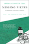
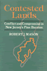
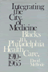
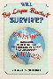

Browse
other Author lists:
A B C
D E F
G H I
J K L
M N O
P Q R
S T U
V W X
Y Z |
 |
Cinema
16
Documents Toward a History of the Film Society
MacDonald,
Scott
488 pp • 7x10 • Fall 2001
paper 978-1-56639-924-1
cloth 978-1-56639-923-4
|
 |
Art
in Cinema
Documents Toward a History of the Film Society
MacDonald,
Scott 320 pp • 7x10 • Fall 2005
cloth 978-1-59213-425-0
|
 |
Working
in the Service Society
edited
by Macdonald, Cameron Lynne and Carmen J. Sirianni
376 pp • 6x9 • Fall 1996
paper 978-1-56639-480-2
cloth 978-1-56639-479-6 |
 |
Surrogates
and Other Mothers
The Debates over Assisted Reproduction
Macklin,
Ruth
264 pp • 6x9 • Spring 1994
paper 978-1-56639-180-1
cloth 978-1-56639-179-5
|
 |
The Parker Sisters
A Border Kidnapping
Maddox, Lucy
256 pp • 6.125x9 • Spring 2016
cloth 978-1-4399-1318-5
|
 |
Sounds of the Modern Nation
Music, Culture, and Ideas in Post-Revolutionary Mexico
Madrid, Alejandro L.
224 pp • 5.25x8.25• Fall 2008
cloth 978-1-59213-694-0
|
 |
Policy
and Politics in Sweden
Principled Pragmatism
Heclo,
Hugh and Henrik Madsen
352 pp • Spring 1986
paper 978-0-87722-266-8
cloth 978-0-87722-265-1 |
 |
My Soul's Been Psychedelicized
Electric Factory: Four Decades in Posters and Photographs
Magid, Larry with Robert Huber
200 pp • 10x12 • Spring 2011
cloth 978-1-4399-0180-9 |
|
The Change Election
Money, Mobilization, and Persuasion in the 2008 Federal Elections
edited by Magleby, David B.
336 pp • 6x9 • Fall 2010
paper 978-1-4399-0339-1
cloth 978-1-4399-0338-4
|
 |
Women
and Stepfamilies
Voices of Anger and Love
edited
by Maglin, Nan Bauer and Nancy Schniedewind
448 pp • Fall 1988
paper 978-0-87722-782-3
cloth 978-0-87722-586-7 |
 |
Midwifery
and Childbirth in America
Rooks,
Judith Pence, foreword by Charles S. Mahan, M.D.
576 pp • 7x10 • Spring 1999
paper 978-1-56639-711-7
cloth 978-1-56639-565-6
|
 |
The
Challenge of Restructuring
North American Labor Movements Respond
edited
by Jenson, Jane and Rianne Mahon
488 pp • 6x9 • Fall 1992
cloth 978-0-87722-981-0 |

|
Hope Is Cut
Youth, Unemployment, and the Future in Urban Ethiopia
Mains, Daniel
208 pp • 6x9 • Fall 2011
paper 978-1-4399-0480-0
cloth 978-1-4399-0479-4
|
 |
Desis
in the House
Indian American Youth Culture in New York City
Maira,
Sunaina Marr
256 pp • 6x9 • Fall 2001
paper 978-1-56639-927-2
cloth 978-1-56639-926-5
|
|  |
Missing
Pieces
A Chronicle of Living with a Disability
Zola,
Irving Kenneth, foreword by Nancy Mairs
258 pp • 5.8125x9 • Fall 2003
paper 978-1-59213-244-7
|
|
Farm
Workers, Agribusiness, and the State
Majka,
Linda C. and Theo J. Majka
320 pp • Spring 1982
cloth 978-0-87722-256-9 |
 |
The
Memory Bird
Survivors of Sexual Abuse
edited
by Malone, Caroline, Linda Farthing and Lorraine Marce
295 pp • 5.5x8.25 • Spring 1997
paper 978-1-56639-526-7
cloth 978-1-56639-525-0
|
 |
Beyond
Segregation
Multiracial and Multiethnic Neighborhoods in the United States
Maly,
Michael T.
288 pp • 6x9 • Fall 2004
paper 978-1-59213-135-8
cloth 978-1-59213-134-1
|
 |
Vanishing Eden
White Construction of Memory, Meaning, and Identity in a Racially Changing City
Maly, Michael T. and Heather M. Dalmage
198 pp • 6x9 • Fall 2015
paper 978-1-4399-1119-8
cloth 978-1-4399-1118-1 |
 |
Cultural
Compass
Ethnographic Explorations of Asian America
edited
by Manalansan, IV, Martin F.
272 pp • 7x10 • Spring 2000
paper 978-1-56639-773-5
cloth 978-1-56639-772-8
|

|
Frankie Manning
Ambassador of Lindy Hop
Manning, Frankie and Cynthia R. Millman
312 pp • 6x9 • Spring 2007
paper 978-1-59213-564-6
cloth 978-1-59213-563-9 |
 |
History
from South Africa
Alternative Visions and Practices
edited
by Brown, Joshua, Patrick Manning, Karin Shapiro and Jon Wiener
467 pp • Spring 1991
paper 978-0-87722-849-3
cloth 978-0-87722-848-6 |
 |
East
Indian Music in the West Indies
Tân-Singing, Chutney, and the Making of Indo-Caribbean Culture
Manuel,
Peter
288 pp • 7x10 • Spring 2000
paper 978-1-56639-763-6
cloth 978-1-56639-762-9
|
 |
Caribbean Currents
Caribbean Music from Rumba to Reggae
Third Edition
Manuel,
Peter with Michael Largey
360 pp • 6x9 • Fall 2016
paper 978-1-4399-1400-7
cloth 978-1-4399-1399-4
|
 |
Caribbean
Currents
Caribbean Music from Rumba to Reggae
Manuel,
Peter with Kenneth Bilby and Michael Largey
336 pp • 6x9 • Spring 2006
paper 978-1-56639-339-3
cloth 978-1-56639-338-6
|

|
Creolizing Contradance in the Caribbean
Manuel, Peter
288 pp • 6x9 • Spring 2009
paper 978-1-59213-735-0
cloth 978-1-59213-734-3
|
 |
Between
Race and Empire
African-Americans and Cubans before the Cuban Revolution
edited
by Brock, Lisa and Digna Casteñada Fuertes, foreword by Manning
Marable
289 pp • 6x9 • Spring 1998
paper 978-1-56639-587-8
cloth 978-1-56639-586-1
|
|
The
Memory Bird
Survivors of Sexual Abuse
edited
by Malone, Caroline, Linda Farthing and Lorraine Marce
295 pp • 5.5x8.25 • Spring 1997
paper 978-1-56639-526-7
cloth 978-1-56639-525-0
|

|
Culinary Fictions
Food in South Asian Diasporic Culture
Mannur, Anita
272 pp • 6x9 • Fall 2009
paper 978-1-4399-0078-9
cloth 978-1-4399-0077-2
|
 |
Chinese Connections
Critical Perspectives on Film, Identity, and Diaspora
edited by Tan, See-Kam, Peter X. Feng and Gina Marchetti 320 pp • 6x9 • Fall 2008
paper 978-1-59213-268-3
cloth 978-1-59213-267-6
|
|
The Chinese Diaspora on American Screens
Race, Sex, and Cinema
Marchetti, Gina 258 pp • 6x9 • Spring 2012
cloth 978-1-59213-518-9 |
 |
From
Tian'anmen to Times Square
Transnational China and the Chinese Diaspora on Global Screens,
1989-1997
Marchetti,
Gina
320 pp • 6x9 • Fall 2005
paper 978-1-59213-278-2
cloth 978-1-59213-277-5 |
 |
My
Mother's Hip
Lessons from the World of Eldercare
Margolies,
Luisa, foreword by Walter M. Bortz II, M.D.
360 pp • 6x9 • Fall 2003
paper 978-1-59213-238-6
cloth 978-1-59213-237-9
|
 |
The
Heidegger Case
On Philosophy and Politics
edited
by Rockmore, Tom and Joseph Margolis
344 pp • 6x9 • Spring 1992
paper 978-0-87722-908-7
cloth 978-0-87722-907-0 |
 |
Sound
Sentiment
An Essay on the Musical Emotions
Kivy,
Peter, foreword by Joseph Margolis
304 pp • Fall 1989
paper 978-0-87722-677-2
cloth 978-0-87722-641-3 |
 |
Philosophy
Looks at the Arts
Contemporary Readings in Aesthetics
edited
by Margolis, Joseph
500 pp • Spring 1987
paper 978-0-87722-440-2
cloth 978-0-87722-439-6
|
 |
Heidegger
and Nazism
Farías,
Victor, edited by Joseph Margolis and Tom Rockmore
368 pp • 6x9 • Fall 1989
paper 978-0-87722-830-1
cloth 978-0-87722-640-6
|
 |
For
People and the Planet
Holism and Humanism in Environmental Ethics
Marietta,
Jr., Don E., foreword by Holmes Rolston III
256 pp • 5.5x8.25 • Fall 1994
paper 978-1-56639-247-1
cloth 978-1-56639-246-4
|
|
Coping
with Poverty
Pentecostals and Christian Base Communities in Brazil
Mariz,
Cecília Loreto
208 pp • 5.5x8.25 • Fall 1993
paper 978-1-56639-113-9
cloth 978-1-56639-112-2 |
 |
Sportista
Female Fandom in the United States
Markovits, Andrei S., and Emily Albertson
268 pp • 6x9 • Fall 2012
paper 978-1-4399-0964-5
cloth 978-1-4399-0963-8
|
|
Fishing
the Delaware Valley
Ingram,
Jr., George H., Robert F. Marler, Jr. and Robert R. Smith, foreword
by Joe Humphreys
256 pp • 6x9 • Fall 1997
paper 978-1-56639-665-3
cloth 978-1-56639-588-5
|
 |
The
Unwanted
European Refugees from the First World War Through the Cold War
Marrus,
Michael R., foreword by Aristide R. Zolberg
432 pp • 6x9 • Spring 2002
paper 978-1-56639-955-5
|
 |
The Company We Keep
Occupational Community in the High-Tech Network Society
Marschall, Daniel
204 pp • 6x9 • Spring 2012
paper 978-1-4399-0756-6
cloth 978-1-4399-0755-9 |
 |
The City on the Hill from Below
The Crisis of Prophetic Black Politics
Marshall, Stephen
250 pp • 6x9 • Spring 2011
paper 978-1-4399-0656-9
cloth 978-1-4399-0655-2
|
 |
Political
Parties and Elections in the United States
Marti,
Jose, edited by Philip S. Foner, translated by Elinor Randall
208 pp • Fall 1988
cloth 978-0-87722-604-8 |
|
Technological
Change and Co-Determination in Sweden
Sandberg,
Åke with Gunnar Broms Arne Grip Lars Sundstrom Jesper Steen
and Peter Ullmark, foreword by Andrew Martin
360 pp • 6x9 • Spring 1992
cloth 978-0-87722-918-6
|

|
Troubling Gender
Youth and Cumbia in Argentina's Music Scene
Vila, Pablo and Pablo Semán, contributions by Eloísa Martín and María Julia Carozzi
230 pp • 6x9 • Fall 2011
paper 978-1-4399-0267-7
cloth 978-1-4399-0266-0
|
 |
The Gendered Executive
A Comparative Analysis of Presidents, Prime Ministers, and Chief Executives
edited by Martin, Janet M., and MaryAnne Borrelli
296 pp • 6x9 • Fall 2016
paper 978-1-4399-1364-2
cloth 978-1-4399-1363-5
|
 |
Atheism
A Philosophical Justification
Martin,
Michael
254 pp • 6x9 • Fall 1989
paper 978-0-87722-943-8
cloth 978-0-87722-642-0
|
 |
The
Case Against Christianity
Martin,
Michael
288 pp • 5.5x8.25 • Spring 1991
paper 978-1-56639-081-1
cloth 978-0-87722-767-0
|
 |
Financialization
of Daily Life
Martin,
Randy
240 pp • 5.5x8.25 • Fall 2002
paper 978-1-56639-988-3
cloth 978-1-56639-987-6
|

|
Knowledge LTD
Toward a Social Logic of the Derivative
Martin, Randy
264 pp • 6x9 • Spring 2015
paper 978-1-4399-1224-9
cloth 978-1-4399-1223-2
|
 |
Under New Management
Universities, Administrative Labor, and the Professional Turn
Martin, Randy
272 pp • 6x9 • Spring 2011
paper 978-1-4399-0696-5
cloth 978-1-4399-0695-8
|
 |
Feminist
Organizations
Harvest of the New Women's Movement
edited
by Ferree, Myra Marx and Patricia Yancey Martin
488 pp • 6x9 • Fall 1994
paper 978-1-56639-229-7
cloth 978-1-56639-228-0
|
|
Philadelphia's
Cultural Landscape
The Sartain Family Legacy
edited
by Martinez, Katharine and Page Talbott
211 pp • 8.5x11 • Fall 2000
cloth 978-1-56639-791-9
|

|
Latino Lives in America
Making It Home
Fraga, Luis R., John A. Garcia, Rodney E. Hero, Michael Jones-Correa, Valerie Martinez-Ebers, and Gary Segura
224 pp • 5.5x8.25 • Spring 2010
paper 978-1-43990-049-9
cloth 978-1-43990-048-2
|
 |
Kongo Graphic Writing and Other Narratives of the Sign
Martínez-Ruiz, Bárbaro
240 pp • 7x10 • Spring 2013
cloth 978-1-4399-0816-7 |
|
The Machinery of Whiteness
Studies in the Structure of Racialization
Martinot, Steve
232 pp • 6x9 • Spring 2010
paper 978-1-43990-052-9
cloth 978-1-43990-051-2
|
 |
The
Rule of Racialization
Class, Identity, Governance
Martinot,
Steve
256 pp • 7x10 • Fall 2002
paper 978-1-56639-982-1
cloth 978-1-56639-981-4
|
 |
Forms
in the Abyss
A Philosophical Bridge between Sartre and Derrida
Martinot,
Steve
320 pp • 6x9 • Spring 2006
paper 978-1-59213-440-3
cloth 978-1-59213-439-7
|

|
Bullying
The Social Destruction of Self
Martocci, Laura
220 pp • 6x9 • Fall 2014
paper 978-1-43991-073-3
cloth 978-1-43991-072-6
|

|
The
American Diary of a Japanese Girl
An Annotated Edition
edited by Marx, Edward and Laura E. Franey, by Yone Noguchi
224 pp • 6x9 • Fall 2006
paper 978-1-59213-555-4
cloth 978-1-59213-554-7
|
 |
Revolution By Love
edited by Ghandour, Dala, Emna Ben Yedder, Mohammed Masbah and Steve Parks
194 pp • 5x7 • Spring 2014
cloth 978-0-98404-299-9 |
 |
Connection
on the Ice
Environmental Ethics in Theory and Practice
Clayton,
Patti H., photographs by Charles Mason
352 pp • 6x9 • Spring 1998
paper 978-1-56639-616-5
cloth 978-1-56639-615-8
|
 |
Bacchanal!
The Carnival Culture of Trinidad
Mason,
Peter
192 pp • 6x9 • Fall 1998
paper 978-1-56639-663-9
cloth 978-1-56639-662-2 |
|  |
Contested
Lands
Mason,
Robert J.
256 pp • 6x9 • Spring 1992
cloth 978-0-87722-925-4 |
|
Silent
Rights
The Ninth Amendment and the Constitution's Unenumerated Rights
Massey,
Calvin R.
288 pp • 5.5x8.25 • Fall 1995
paper 978-1-56639-312-6
cloth 978-1-56639-311-9 |
 |
Smuggled
Chinese
Clandestine Immigration to the United States
Chin,
Ko-lin, foreword by Douglas S. Massey
296 pp • 6x9 • Fall 1999
paper 978-1-56639-733-9
cloth 978-1-56639-732-2
|
 |
Black
City Cinema
African American Urban Experiences in Film
Massood,
Paula J.
280 pp • 6x9 • Fall 2002
paper 978-1-59213-003-0
cloth 978-1-59213-002-3
|
|
The Spike Lee Reader
edited by Massood, Paula J.
312 pp • 6x9 • Fall 2007
paper 978-1-59213-485-4
cloth 978-1-59213-484-7
|
 |
Detroit
Lives
edited
by Mast, Robert H., foreword by Dan Georgakas
368 pp • 6x9 • Fall 1994
paper 978-1-56639-226-6
cloth 978-1-56639-225-9 |

|
The Philadelphia Mummers
Building Community through Play
Masters, Patricia Anne
256 pp • 5.5x8.25 • Spring 2007
paper 978-1-59213-619-0
cloth 978-1-59213-609-4 |
 |
Re/collecting
Early Asian America
Essays in Cultural History
edited
by Lee, Josephine, Imogene L. Lim and Yuko Matsukawa
384 pp • 7x10 • Spring 2002
paper 978-1-56639-964-7
cloth 978-1-56639-963-0
|
 |
Vegetarianism
Movement or Moment?
Maurer,
Donna
216 pp • 5.5x8.25 • Spring 2002
paper 978-1-56639-936-4
cloth 978-1-56639-935-7
|
 |
Revelation
in Religious Belief
Mavrodes,
George I.
168 pp • Spring 1988
cloth 978-0-87722-545-4 |
|
The
Politics of the Possible
The Brazilian Rural Workers' Trade Union Movement, 1964-1985
Maybury-Lewis,
Biorn
320 pp • 6x9 • Spring 1994
paper 978-1-56639-167-2
cloth 978-1-56639-166-5 |
 |
The
German Greens
Paradox between Movement and Party
edited
by Mayer, Margit and John Ely, translated by Michael Schatzschneider
352 pp • 6x9 • Spring 1997
paper 978-1-56639-516-8
cloth 978-1-56639-515-1 |
 |
Serial Fu Manchu
The Chinese Supervillain and the Spread of Yellow Peril Ideology
Mayer, Ruth
216 pp • 6x9 • Fall 2013
paper 978-1-4399-1056-6
cloth 978-1-4399-1055-9 |
|
Interfaith Dialogue at the Grass Roots
Preface by Leonard Swidler
Mays, Rebecca Kratz
142 pp • 6x9 • Spring 2009
paper 978-0-931214-11-0 |
|  |
Integrating
the City of Medicine
Blacks in Philadelphia Health Care, 1910-1965
McBride,
David
320 pp • Fall 1988
cloth 978-0-87722-546-1 |

|
The Politics of State Feminism
Innovation in Comparative Research
McBride, Dorothy E. and Amy G. Mazur
318 pp • 6x9 • Fall 2010
paper 978-1-4399-0208-0
cloth 978-1-4399-0207-3
|
|
Black
Power Ideologies
An Essay in African American Political Thought
McCartney,
John T.
264 pp • 6x9 • Spring 1992
paper 978-1-56639-145-0
cloth 978-0-87722-914-8 |

|
I Walked with Giants
The Autobiography of Jimmy Heath
Heath, Jimmy and Joseph McLaren
344 pp • 6x9 • Fall 2009
cloth 978-1-4399-0198-4
|
 |
Medical
Malpractice
Law, Tactics, and Ethics
McClellan,
Frank M.
328 pp • 6x9 • Fall 1993
paper 978-1-56639-066-8
cloth 978-1-56639-065-1 |

|
City in a Park
A History of Philadelphia's Fairmount Park System
McClelland, James and Lynn Miller
368 pp • 8x10 • Fall 2015
cloth 978-1-4399-1208-9 |
 |
E.
P. Thompson
Critical Perspectives
edited
by Kaye, Harvey J. and Keith McClelland
350 pp • Spring 1990
paper 978-0-87722-742-7
cloth 978-0-87722-730-4
|
 |
Gratitude
McConnell,
Terrance
288 pp • 5.5x8.25 • Spring 1993
cloth 978-1-56639-038-5 |
 |
Crime and Family
Selected Essays of Joan McCord
McCord, Joan, introduction by David Farrington, foreword by Geoffrey Sayre-McCord
320 pp • 6x9 • Fall 2006
paper 978-1-59213-558-5
cloth 978-1-59213-557-8
|

|
Mobilizing Science
Movements, Participation, and the Remaking of Knowledge
McCormick, Sabrina
218 pp • 5.5x8.25 • Spring 2009
cloth 978-1-43990-009-3
|
 |
Chicago
Race, Class, and the Response to Urban Decline
Squires,
Gregory D., Larry Bennett, Kathleen McCourt and Philip Nyden
248 pp • Fall 1987
paper 978-0-87722-617-8
cloth 978-0-87722-487-7 |
 |
The Risk Society Revisited
Social Theory and Governance
Rosa, Eugene A., Ortwin Renn and Aaron M. McCright
264 pp • 6x9 • Fall 2013
paper 978-1-4399-0259-2
cloth 978-1-4399-0258-5 |
 |
Crossroads,
Directions, and a New Critical Race Theory
edited
by Valdes, Francisco, Jerome McCristal Culp and Angela P. Harris
440 pp • 7x10 • Fall 2001
paper 978-1-56639-930-2
cloth 978-1-56639-929-6
|
|
Talking
Health with Dr. Brian McDonough
edited
by McDonough, M.D., Brian P.
264 pp • 6x9 • Fall 1994
cloth 978-1-56639-207-5 |
 |
Black
Baltimore
A New Theory of Community
McDougall,
Harold A.
272 pp • 6x9 • Spring 1993
paper 978-1-56639-193-1
cloth 978-1-56639-037-8
|

|
Managing the Infosphere
Governance, Technology, and Cultural Practice in Motion
McDowell, Stephen D., Philip E. Steinberg and Tami K. Tomasello
248 pp • 5.5x8.25 • Fall 2007
paper 978-1-59213-280-5
cloth 978-1-59213-279-9
|
 |
Chanting
Down Babylon
The Rastafari Reader
edited
by Murrell, N. Samuel, William D. Spencer and Adrian Anthony
McFarlane
467 pp • 7x10 • Fall 1998
paper 978-1-56639-584-7
cloth 978-1-56639-583-0
|

|
The Identity Dilemma
Social Movements and Collective Identity
edited by McGarry, Aidan and James M. Jasper
238 pp • 6x9 • Spring 2015
paper 978-1-4399-1252-2
cloth 978-1-4399-1251-5 |
 |
American History Now
Edited for the American Historical Association by Eric Foner and Lisa McGirr
440 pp • 6x9 • Spring 2011
paper 978-1-4399-0244-8
cloth 978-1-4399-0243-1
|
 |
The
Brazilian Sound
Samba, Bossa Nova, and the Popular Music of Brazil
McGowan,
Chris and Ricardo Pessanha
Revised and Expanded Edition
280 pp • 7x10 • Fall 2008
paper 978-1-59213-929-38
cloth 978-1-59213-928-6
|
 |
Pentecostal
Catholics
Power, Charisma, and Order in a Religious Movement
McGuire,
Meredith B.
1982
cloth 978-0-87722-235-4 |
 |
"Other
Sheep I Have"
The Autobiography of Father Paul M. Washington
Washington,
Paul M. with David McI. Gracie, afterword by Barbara Harris
280 pp • 5.5x8.25 • Spring 1994
paper 978-1-56639-178-8
cloth 978-1-56639-177-1
|
 |
Race Appeal
How Candidates Invoke Race in U.S. Political Campaigns
McIlwain, Charlton D. and Stephen M. Caliendo
272 pp • 6x9 • Spring 2011
paper 978-1-4399-0276-9
cloth 978-1-4399-0275-2
|
 |
Time
and Experience
McInerney,
Peter K.
224 pp • Fall 1990
paper 978-1-56639-010-1
cloth 978-0-87722-752-6 |
 |
The
New Left Revisited
edited
by McMillian, John and Paul Buhle
280 pp • 7x10 • Fall 2002
paper 978-1-56639-976-0
cloth 978-1-56639-975-3
|
 |
Poisoned
Ivy
Lesbian and Gay Academics Confronting Homophobia
McNaron,
Toni A. H.
256 pp • 6x9 • Fall 1996
paper 978-1-56639-488-8
cloth 978-1-56639-487-1
|
 |
Morality
and Human Nature
A New Route to Ethical Theory
McShea,
Robert J.
240 pp • Fall 1990
cloth 978-0-87722-735-9 |

|
Chilean New Song
The Political Power of Music, 1960s-1973
McSherry, J. Patrice
232 pp • 6x9 • Spring 2015
paper 978-1-4399-1152-5
cloth 978-1-4399-1151-8 |
|
Neopolitics
American Political Ideas in the 1980s
Medcalf,
Linda J. and Kenneth M. Dolbeare
224 pp • Spring 1985
cloth 978-0-87722-388-7 |
 |
Las
Hermanas
Chicana/Latina Religious-Political Activism in the U.S. Catholic
Church
Medina,
Lara 232 pp • 5.5x8.25 • Spring
2004
paper 978-1-59213-483-0
cloth 978-1-59213-250-8
|
|
Beyond
the Market and the State
New Directions in Community Development
edited
by Bruyn, Severyn T. and James Meehan
272 pp • Fall 1987
cloth 978-0-87722-484-6 |
 |
Rites
of Assent
Two Novellas
Qasim,
Abd al-Hakim, translated by Peter Theroux, introduction by Samia
Mehrez
192 pp • 5.5x8.25 • Spring 1995
paper 978-1-56639-354-6
cloth 978-1-56639-353-9
|
 |
Twentieth
Century Limited
Industrial Design in America, 1925-1939
Meikle,
Jeffrey L.
264 pp • 7x10 • Spring 2001
paper 978-1-56639-893-0
cloth 978-1-56639-892-3
|
 |
Ethnographies of Youth and Temporality
Time Objectified
edited by Dalsgård, Anne Line, Martin Demant Frederiksen, Susanne Højlund and Lotte Meinert
Afterword by Michael Flaherty
206 pp • 6x9 • Fall 2013
cloth 978-1-4399-1066-5 |
 |
Unbought and Unbossed
Transgressive Black Women, Sexuality, and Representation
Melancon, Trimiko
256 pp • 5.5x8.5 • Fall 2014
paper 978-1-43991-146-4
cloth 978-1-43991-145-7 |
 |
Borderless
Borders
U.S. Latinos, Latin Americans, and the Paradox of Interdependence
edited
by Bonilla, Frank, Edwin Meléndez, Rebecca Morales and María
de los Angeles Torres
336 pp • 6x9 • Spring 1998
paper 978-1-56639-620-2
cloth 978-1-56639-619-6
|
 |
A
Fine Romance
Five Ages of Film Feminism
Mellencamp,
Patricia
344 pp • 6x9 • Fall 1995
paper 978-1-56639-401-7
cloth 978-1-56639-400-0
|

|
Dangerous Trade
Histories of Industrial Hazard across a Globalizing World
edited by Sellers, Christopher and Joseph Melling
228 pp • 6x9 • Fall 2011
paper 978-1-4399-0469-5
cloth 978-1-4399-0468-8
|
 |
Legalizing
Gay Marriage
Mello,
Michael, foreword by David Chambers
352 pp • 6x9 • Fall 2004
paper 978-1-59213-079-5
cloth 978-1-59213-078-8
|
|
The
Physician's Hand
Nurses and Nursing in the Twentieth Century
Melosh,
Barbara
240 pp • Fall 1982
paper 978-0-87722-290-3
cloth 978-0-87722-278-1 |
|
A
Coping with Abundance
Energy and the Environment in Industrial America
Melosi,
Martin V.
304 pp • Fall 1984
cloth 978-0-87722-372-6 |
 |
Rules
for Rulers
The Politics of Advice
Meltsner,
Arnold J.
208 pp • Spring 1990
cloth 978-0-87722-685-7 |
 |
Nomads
of the Present
Social Movements and Individual Needs in Contemporary Society
Melucci,
Alberto, edited by John Keane and Paul Mier
320 pp • Fall 1988
cloth 978-0-87722-599-7 |
 |
Return
of the Indian
Conquest and Revival in the Americas
Wearne,
Phillip, foreword by Rigoberta Menchu
264 pp • 7.5x9.5 • Fall 1996
paper 978-1-56639-501-4
cloth 978-1-56639-500-7 |

|
We Decide!
Theories and Cases in Participatory Democracy
Menser, Michael
360 pp • 6x9 • Fall 2017
paper 978-1-4399-1418-2
cloth 978-1-4399-1417-5
|
 |
Whisper Not
The Autobiography of Benny Golson
Golson, Benny and Jim Merod
352 pp • 6x9 • Spring 2016
cloth 978-1-4399-1333-8
|
 |
Undaunted
Psychologist
edited
by Brannigan, Gary G. and Matthew R. Merrens
320 pp • 6.5x9.25 • Fall 1992
cloth 978-1-56639-015-6 |
 |
Urban
Dangers
Life in a Neighborhood of Strangers
Merry,
Sally Engle
278 pp • Spring 1981
paper 978-0-87722-425-9
cloth 978-0-87722-219-4 |
 |
Holy
Leisure
Recreation and Religion in God's Square Mile
Messenger,
Troy
192 pp • 6x9 • Fall 2000
paper 978-1-56639-841-1
|
 |
Diet
and Domestic Life in Society
edited
by Sharman, Anne, Janet Theophano, Karen Curtis and Ellen Messer
288 pp • Fall 1990
cloth 978-0-87722-751-9 |

|
The Politics of New Immigrant Destinations
Transatlantic Perspectives
edited by Chambers, Stefanie, Diana Evans, Anthony M. Messina, and Abigail Fisher Williamson
348 pp • 6x9 • Spring 2017
paper 978-1-4399-1463-2
cloth 978-1-4399-1462-5
|
 |
One-Eyed
Science
Occupational Health and Women Workers
Messing,
Karen, foreword by Jeanne Mager Stellman
264 pp • 5.5x8.2 • Spring 1998
paper 978-1-56639-598-4
cloth 978-1-56639-597-7
|
 |
Who
Killed George Polk?
The Press Covers Up a Death in the Family
Vlanton,
Elias with Zak Mettger
352 pp • 6x9 • Fall 1995
cloth 978-1-56639-367-6 |
 |
Striking
Steel
Solidarity Remembered
Metzgar,
Jack
320 pp • 6x9 • Fall 1999
paper 978-1-56639-739-1
cloth 978-1-56639-738-4
|
 |
History
and September 11th
edited
by Meyerowitz, Joanne
288 pp • 6x9 • Fall 2003
paper 978-1-59213-203-4
cloth 978-1-59213-202-7
|
 |
Not
June Cleaver
Women and Gender in Postwar America, 1945-1960
edited
by Meyerowitz, Joanne
424 pp • 6x9 • Spring 1994
paper 978-1-56639-171-9
cloth 978-1-56639-170-2
|
 |
Critical
Perspectives on Housing
edited
by Bratt, Rachel G., Chester Hartman and Ann Meyerson
600 pp • Fall 1985
paper 978-0-87722-396-2
cloth 978-0-87722-395-5 |

|
The Borders of Justice
edited by Balibar, Étienne, Sandro Mezzadra and Ranabir Samaddar
224 pp • 6x9 • Fall 2011
paper 978-1-4399-0686-6
cloth 978-1-4399-0685-9
|
 |
The
Two-in-One
Walking with Smokie, Walking with Blindness
Michalko,
Rod
256 pp • 5.5x8.25 • Fall 1998
paper 978-1-56639-649-3
cloth 978-1-56639-648-6
|
 |
The
Difference That Disability Makes
Michalko,
Rod
208 pp • 6x9 • Spring 2002
paper 978-1-56639-934-0
cloth 978-1-56639-933-3
|
|
Nomads
of the Present
Social Movements and Individual Needs in Contemporary Society
Melucci,
Alberto, edited by John Keane and Paul Mier
320 pp • Fall 1988
cloth 978-0-87722-599-7 |
 |
Caribbean Migration to Western Europe and the United States
Essays on Incorporation, Identity, and Citizenship
edited by Cervantes-Rodriguez, Margarita, Ramon Grosfoguel and Eric Mielants
270 pp • 6x9 • Fall 2008
cloth 978-1-59213-954-5
|

|
The Origins of Capitalism and the "Rise of the West"
Mielants, Eric H.
256 pp • 6x9 • Spring 2008
paper 978-1-59213-576-9
cloth 978-1-59213-575-2
|
 |
Re-Viewing
James Baldwin
Things Not Seen
edited
by Miller, D. Quentin, foreword by David Adams Leeming
312 pp • 6x9 • Fall 1999
paper 978-1-56639-737-7
cloth 978-1-56639-736-0
|
 |
Still
Philadelphia
A Photographic History, 1890-1940
Miller,
Fredric M., Morris J. Vogel and Allen F. Davis
312 pp • 8x10 • Spring 1983
cloth 978-0-87722-306-1 |
 |
Street
Woman
Miller,
Eleanor M.
216 pp • Spring 1986
paper 978-0-87722-509-6
cloth 978-0-87722-417-4 |
|
City in a Park
A History of Philadelphia's Fairmount Park System
McClelland, James and Lynn Miller
368 pp • 8x10 • Fall 2015
cloth 978-1-4399-1208-9 |
 |
Addressing Violence Against Women on College Campuses
edited by Kaukinen, Catherine, Michelle Hughes Miller, and Ráchael A. Powers
330 pp • 6x9 • Spring 2017
paper 978-1-4399-1376-5
cloth 978-1-4399-1375-8 |

|
Blow Up the Humanities
Miller, Toby
172 pp • 5.5x8.25 • Fall 2012
paper 978-1-4399-0983-6
cloth 978-1-4399-0982-9
|

|
Cultural
Citizenship
Cosmopolitanism, Consumerism, and Television in a Neoliberal
Age
Miller, Toby
248 pp • 6x9 • Fall 2006
paper 978-1-59213-561-5
cloth 978-1-59213-560-8
|
 |
Sportsex
Miller,
Toby
192 pp • 6x9 • Fall 2002
paper 978-1-56639-994-4
|
 |
Swingin'
at the Savoy
The Memoir of a Jazz Dancer
Miller,
Norma with Evette Jensen
304 pp • 6x9 • Spring 2001
paper 978-1-56639-849-7
|
 |
Emergency
Broadcasting and 1930s American Radio
Miller,
Edward D.
264 pp • 5.5x8.25 • Fall 2002
paper 978-1-56639-993-7
cloth 978-1-56639-992-0
|
 |
Philadelphia
Stories
A Photographic History, 1920-1960
Miller,
Fredric M., Morris J. Vogel and Allen F. Davis
319 pp • 8x10 • Fall 1988
cloth 978-0-87722-551-5 |
|
Frankie Manning
Ambassador of Lindy Hop
Manning, Frankie and Cynthia R. Millman
312 pp • 6x9 • Spring 2007
paper 978-1-59213-564-6
cloth 978-1-59213-563-9 |

|
Accessible Citizenships
Disability, Nation, and the Cultural Politics of Greater Mexico
Minich, Julie Avril
240 pp • 5.5x8.5 • Fall 2013
paper 978-1-4399-1070-2
cloth 978-1-4399-1069-6
|
 |
Transforming
Knowledge
Minnich,
Elizabeth Kamarck
312 pp • 6x9 • Fall 2004
paper 978-1-59213-132-7
cloth 978-1-59213-131-0
|
 |
Unzipped
Souls
A Jazz Journey Through the Soviet Union
Minor,
William
256 pp • 6x9 • Fall 1995
cloth 978-1-56639-324-9 |

|
Nature in Common?
Environmental Ethics and the Contested Foundations of Environmental Policy
Minteer, Ben A.
312 pp • 6x9 • Spring 2009
paper 978-1-59213-704-6
cloth 978-1-59213-703-9
|
|
Refounding Environmental Ethics
Pragmatism, Principle, and Practice
Minteer, Ben A.
212 pp • 6x9 • Fall 2011
paper 978-1-4399-0084-0
cloth 978-1-4399-0083-3
|
 |
Crossing
the Neoliberal Line
Pacific Rim Migration and the Metropolis
Mitchell,
Katharyne
296 pp • 6x9 • Fall 2004
paper 978-1-59213-084-9
cloth 978-1-59213-083-2
|
 |
Stacked
Deck
A Story of Selfishness in America
Mitchell,
Lawrence E.
264 pp • 6x9 • Spring 1998
cloth 978-1-56639-592-2 |
|  |
Will Big League Baseball Survive?
Globalization, the End of Television, Youth Sports, and the Future of Major League Baseball
Mitchell,
Lincoln A.
234 pp • 5.5x8.25 • Fall 2016
paper 978-1-4399-1379-6
cloth 978-1-4399-1378-9
|
 |
On
Strike at Hormel
The Struggle for a Democratic Labor Movement
Green,
Hardy, foreword by David Moberg
369 pp • Fall 1989
paper 978-0-87722-832-5
cloth 978-0-87722-635-2 |

|
Live Wire
Women and Brotherhood in the Electrical Industry
Moccio, Francine A.
288 pp • 6x9 • Spring 2009
paper 978-1-59213-738-1
cloth 978-1-59213-737-4
|
 |
City and Environment
Boone,
Christopher G. and Ali Modarres 240 pp •
6x9 • Spring 2006
paper 978-1-59213-284-3
cloth 978-1-59213-283-6
|
 |
The
Religious Challenge to the State
edited
by Moen, Matthew C. and Lowell S. Gustafson
320 pp • Fall 1991
cloth 978-0-87722-856-1 |
|
The
Study of Religion in an Age of Global Dialogue
Swidler,
Leonard and Paul Mojzes
240 pp • 6x9 • Fall 2000
paper 978-1-56639-793-3
cloth 978-1-56639-792-6 |

|
Barriers and Belonging
Personal Narratives of Disability
edited
by Jarman, Michelle, Leila Monaghan, and Alison Quaggin Harkin
286 pp • Fall 2016
paper 978-1-4399-1388-8
cloth 978-1-4399-1387-1 |
 |
An
Indian in White America
Monroe,
Mark, edited by Carolyn Reyer, afterword by Kenneth Lincoln
256 pp • 6x9 • Fall 1994
paper 978-1-56639-235-8
cloth 978-1-56639-234-1 |

|
Imagined Liberation
Xenophobia, Citizenship, and Identity in South Africa, Germany, and Canada
Adam, Heribert and Kogila Moodley
246 pp • 6x9 • Spring 2015
paper 978-1-4399-1190-7
cloth 978-1-4399-1189-1
|
 |
Seeking
Mandela
Peacemaking Between Israelis and Palestinians
Adam,
Heribert and Kogila Moodley
248 pp • 6x9 • Spring 2005
paper 978-1-59213-396-3
cloth 978-1-59213-395-6
|
|
Homeboys
Gangs, Drugs, and the Prison in the Barrios of Los Angeles
Moore,
Joan W.
240 pp • Spring 1980
paper 978-0-87722-114-2
cloth 978-0-87722-121-0
|
|
Elements
of Ethics
Moore,
G. E., edited by Tom Regan
272 pp • 6x9 • Fall 1991
paper 978-1-59213-194-5
cloth 978-0-87722-770-0
|
 |
Going
Down to the Barrio
Homeboys and Homegirls in Change
Moore,
Joan W.
200 pp • Fall 1991
paper 978-0-87722-855-4
cloth 978-0-87722-854-7
|
 |
The
Maya Diaspora
Guatemalan Roots, New American Lives
edited
by Loucky, James and Marilyn M. Moors
248 pp • 6x9 • Fall 2000
paper 978-1-56639-795-7
cloth 978-1-56639-794-0
|
|
Borderless
Borders
U.S. Latinos, Latin Americans, and the Paradox of Interdependence
edited
by Bonilla, Frank, Edwin Meléndez, Rebecca Morales and María
de los Angeles Torres
336 pp • 6x9 • Spring 1998
paper 978-1-56639-620-2
cloth 978-1-56639-619-6
|

|
Latino Mayors
Political Change in the Postindustrial City
edited by Orr, Marion and Domingo Morel, foreword by Luis Ricardo Fraga
312 pp • 6x9 • Fall 2017
paper 978-1-4399-1543-1
cloth 978-1-4399-1542-4
|
 |
Technology
Assessment
A Feminist Perspective
Morgall,
Janine Marie
264 pp • 5.5x8.25 • Fall 1993
paper 978-1-56639-091-0
cloth 978-1-56639-090-3 |
 |
The
Sixties Experience
Hard Lessons About Modern America
Morgan,
Edward P., foreword by Howard P. Zinn
357 pp • 6x9 • Spring 1991
paper 978-1-56639-014-9
cloth 978-0-87722-805-9
|
 |
Women
and the Politics of Empowerment
edited
by Bookman, Ann and Sandra Morgen
352 pp • Fall 1987
paper 978-0-87722-525-6
cloth 978-0-87722-504-1
|
 |
Children
of Strangers
The Stories of a Black Family
Morgan,
Kathryn L., afterword by Otey M. Scruggs
122 pp • 5.5x8.25 • Fall 1980
paper 978-0-87722-240-8
cloth 978-0-87722-203-3 |
 |
Myths
about the Powerless
Contesting Social Inequalities
edited
by Lykes, M. Brinton, Ali Banuazizi, Ramsay Liem and Michael
Morris, foreword by George W. Albee
416 pp • 6x9 • Spring 1996
paper 978-1-56639-422-2
cloth 978-1-56639-421-5
|

|
Blue Juice
Euthanasia in Veterinary Medicine
Morris, Patricia
244 pp • 6x9 • Spring 2012
paper 978-1-4399-0706-1
cloth 978-1-4399-0705-4 |
 |
The
World the Sixties Made
Politics and Culture in Recent America
edited
by Gosse, Van and Richard Moser
352 pp • 6x9 • Fall 2003
paper 978-1-59213-201-0
cloth 978-1-59213-200-3
|
 |
Power,
Process, and Popular Sovereignty
Mostov,
Julie
256 pp • 6x9 • Fall 1992
cloth 978-0-87722-970-4 |
 |
Taking
It Personally
Racism in the Classroom from Kindergarten to College
Berlak,
Ann and Sekani Moyenda
216 pp • 6x9 • Spring 2001
paper 978-1-56639-876-3
cloth 978-1-56639-875-6
|
 |
The
Women's Movements of the United States and Western Europe
Consciousness, Political Opportunity, and Public Policy
edited
by Katzenstein, Mary Fainsod and Carol McClurg Mueller
366 pp • 6x9 • Spring 1987
paper 978-1-56639-012-5
cloth 978-0-87722-463-1 |
 |
Un-American
W.E.B. Du Bois and the Century of World Revolution
Mullen, Bill V.
264 pp • 6x9 • Fall 2015
paper 978-1-4399-1110-5
cloth 978-1-4399-1109-9 |
 |
Concise
Historical Atlas of Pennsylvania
edited
by Muller, Edward K.
48 pp • Fall 1989
paper 978-0-87722-672-7 |
 |
The
Atlas of Pennsylvania
edited
by Cuff, David J., William J. Young, Edward K. Muller, Wilbur
Zelinsky and Ronald F. Abler
304 pp • 13.25x15.5 • Fall 1989
cloth 978-0-87722-618-5 |
|
All
Talk
The Talkshow in Media Culture
Munson,
Wayne
288 pp • 6x9 • Fall 1992
paper 978-1-56639-194-8
cloth 978-0-87722-995-7 |

|
Resentment's Virtue
Jean Améry and the Refusal to Forgive
Brudholm, Thomas, foreword by Jeffrie Murphy
256 pp • 6x9 • Fall 2007
paper 978-1-59213-567-7
cloth 978-1-59213-566-0
|
|
Illness or Deviance?
Drug Courts, Drug Treatment, and the Ambiguity of Addiction
Murphy, Jennifer
244 pp • 6x9 • Spring 2015
paper 978-1-4399-1190-7
cloth 978-1-4399-1189-1 |
|
Values
and Value Theory in Twentieth-Century America
Essays in Honor of Elizabeth Flower
edited
by Murphy, Murray G. and Ivar Berg
308 pp • Fall 1988
cloth 978-0-87722-557-7 |
 |
Women's
Suffrage Movement and Irish Society in the Early Twentieth Century
Murphy,
Cliona
240 pp • Spring 1989
cloth 978-0-87722-636-9 |
 |
Cocaine
Changes
The Experience of Using and Quitting
Waldorf,
Dan, Craig Reinarman and Sheigla Murphy
336 pp • 5.5x8.25 • Fall 1991
paper 978-1-56639-013-2
cloth 978-0-87722-863-9 |
 |
Social
Inequality in Oaxaca
A History of Resistance and Change
Murphy,
Arthur D. and Alex Stepick, foreword by Henry A. Selby
300 pp • Fall 1991
paper 978-0-87722-869-1
cloth 978-0-87722-868-4
|
 |
Deregulating Desire
Flight Attendant Activism, Family Politics, and Workplace Justice
Murphy, Ryan Patrick
252 pp • 6x9 • Fall 2016
paper 978-1-4399-0989-8
cloth 978-1-4399-0988-1 |
 |
Radical
Sociologists and the Movement
Experiences, Lessons, and Legacies
edited
by Oppenheimer, Martin, Martin J. Murray and Rhonda F. Levine
256 pp • Fall 1990
cloth 978-0-87722-745-8 |
|
Do
Not Neglect Hospitality
The Catholic Worker and the Homeless
Murray,
Harry
304 pp • Fall 1990
cloth 978-0-87722-726-7 |

|
Afro-Caribbean Religions
An Introduction to Their Historical, Cultural, and Sacred Traditions
Murrell, N. Samuel
440 pp • 6x9 • Fall 2009
paper 978-1-4399-0041-3
cloth 978-1-4399-0040-6
|
|
Chanting
Down Babylon
The Rastafari Reader
edited
by Murrell, N. Samuel, William D. Spencer and Adrian Anthony
McFarlane
467 pp • 7x10 • Fall 1998
paper 978-1-56639-584-7
cloth 978-1-56639-583-0
|
 |
Hollywood's
New Deal
Muscio,
Giuliana
320 pp • 6x9 • Fall 1996
paper 978-1-56639-496-3
cloth 978-1-56639-495-6 |
 |
The
Cardinals Encyclopedia
Eisenbath,
Michael, foreword by Stan Musial
652 pp • 9x12 • Spring 1999
cloth 978-1-56639-703-2
|
 |
Resisting
Images
Essays on Cinema and History
edited
by Sklar, Robert and Charles Musser
320 pp • Fall 1990
paper 978-0-87722-738-0
cloth 978-0-87722-731-1 |
|
Sufficiency
of Hope
Conceptual Foundations of Religion
Muyskens,
James L.
170 pp • Fall 1979
cloth 978-0-87722-162-3 |
 |
Echoes
from the Holocaust
Philosophical Reflections on a Dark Time
edited
by Rosenberg, Alan and Gerald E. Myers
472 pp • Spring 1988
paper 978-0-87722-686-4
cloth 978-0-87722-539-3 |
|
New
Soviet Thinking and U.S. Nuclear Policy
Myers,
David B.
304 pp • Fall 1990
cloth 978-0-87722-710-6 |
|
States,
Labor Markets, and the Future of Old-Age Policy
edited
by Myles, John and Jill Quadagno
340 pp • Spring 1991
cloth 978-0-87722-790-8 |